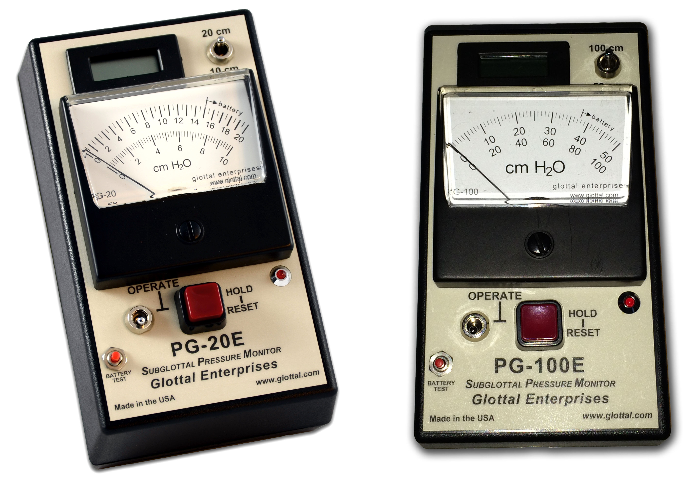
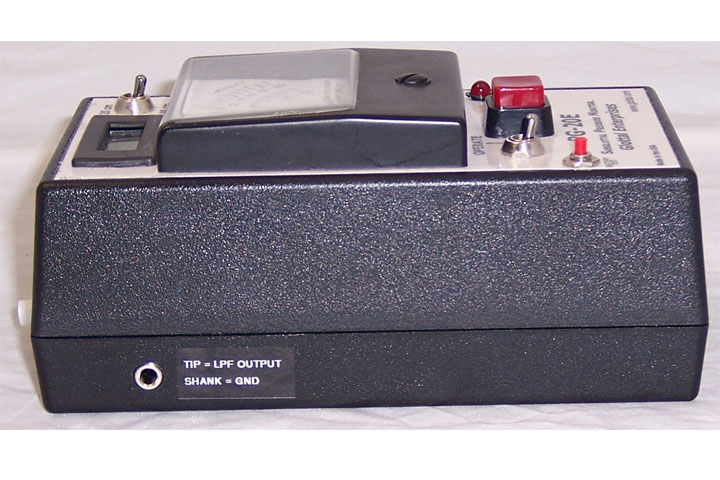
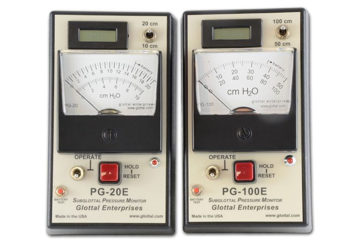
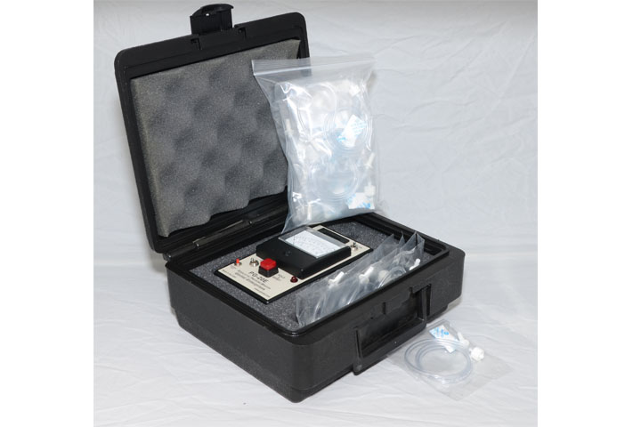
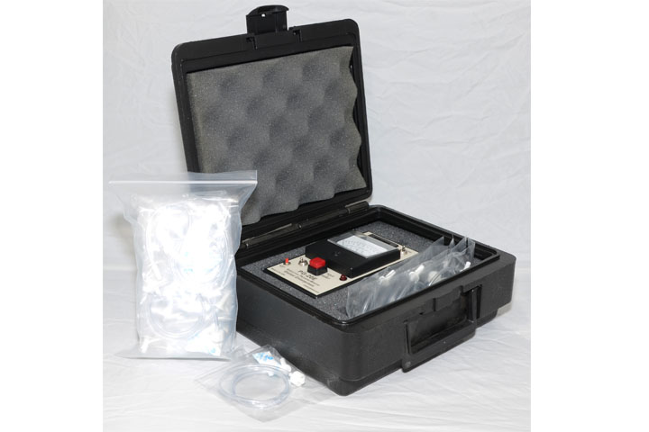
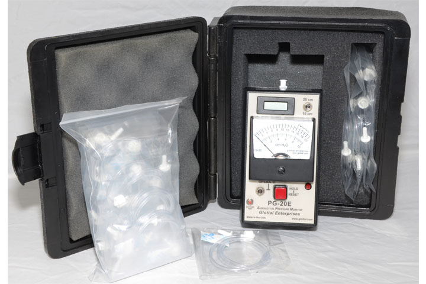
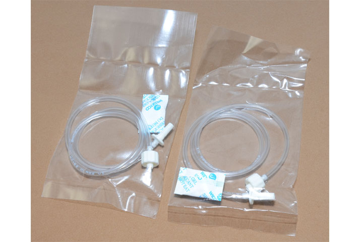
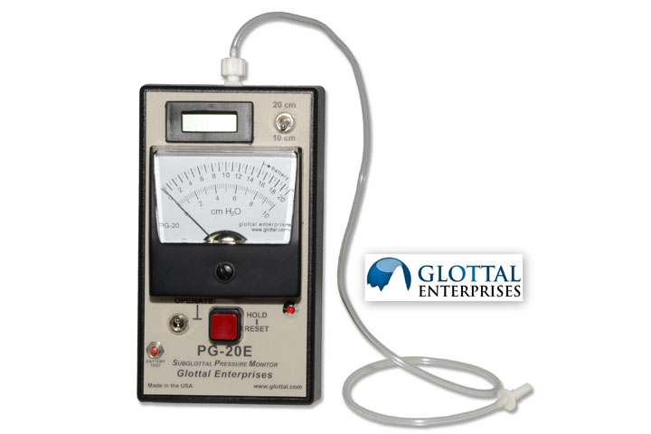

The PG-20E and PG-100E are handheld, battery-operated devices that give real-time estimates of the subglottal pressureSubglottal pressure, or Subglottic pressure, is the pressure that builds up beneath (“Sub-”) the vocal folds. The amount of subglottal pressure generated is determined by the airflow through the leakage of air between the vocal folds and the resistance to that flow during speech or singing. The PG-20E and PG-100E are self-contained systems – no computer or computer software is needed for their operation. The two models differ only in pressure range measured. The PG-20E measures up to 20 cm H2O and the PG-100E up to 100 cm H2O.

PG-20E and PG-100E
The air pressure in the lungs during speech or singing supplies the energy that generates the human voice. This lung pressure is also commonly referred to as the subglottal pressureSubglottal pressure, or Subglottic pressure, is the pressure that builds up beneath (“Sub-”) the vocal folds. The amount of subglottal pressure generated is determined by the airflow through the leakage of air between the vocal folds and the resistance to that flow or tracheal pressure, though these are all technically slightly different. We will hereafter use the term subglottal pressureSubglottal pressure, or Subglottic pressure, is the pressure that builds up beneath (“Sub-”) the vocal folds. The amount of subglottal pressure generated is determined by the airflow through the leakage of air between the vocal folds and the resistance to that flow.
Knowledge of the subglottal pressureSubglottal pressure, or Subglottic pressure, is the pressure that builds up beneath (“Sub-”) the vocal folds. The amount of subglottal pressure generated is determined by the airflow through the leakage of air between the vocal folds and the resistance to that flow driving the laryngeal voice source is very important in understanding the operation of the voice. Until recently, the subglottal pressureSubglottal pressure, or Subglottic pressure, is the pressure that builds up beneath (“Sub-”) the vocal folds. The amount of subglottal pressure generated is determined by the airflow through the leakage of air between the vocal folds and the resistance to that flow has been difficult to measure non-invasivelyA non-invasive measurement is one that does not require the introduction of instruments into the body.. The PG-20E and PG-100E use a version of the intraoral pressurePressure within the mouth when the lips and the velopharyngeal passageway are closed interpolation technique introduced by Glottal Enterprises founder Martin Rothenberg (J. Acoustic Society of America 53, 1632–1645). Real-time operation is accomplished by means of a unique patent-pending electronic circuit. In the PG-20E/PG-100E, the intraoral pressurePressure within the mouth when the lips and the velopharyngeal passageway are closed during a /p/ consonant is recorded by means of a pressure transducer within the unit that is accessed via a standard Luer connector on the end of the unit. The PG-20E is supplied with a number of pressure sensing tubes, each with a mating Luer connector. The probe tube for the oral pressure transducer should be placed between the subject's lips, usually in the corner of the mouth, where it is least affected by lip motion.
To make it easier to record a meter reading, the PG-20E/PG-100E has a HOLD function. Pushing and holding down the OPERATE/HOLD button during or just after an utterance will cause the meter reading to remain at the value it was at the instant the button was pushed.
This product is for research and teaching purposes only. It is not a medical device. It is not intended to be used in the diagnosis, cure, treatment, mitigation or prevention of disease and it is not intended to affect the structure or function of the body.
- One-handed operation
- Analog and digital meters for ease of reading and accuracy
- HOLD function to aid recording data points
- Auto-shut-off after 1 minute of inactivity to save battery
- Raw signal output for external recording/data acquisition (3.5mm phono jack)
- Individually wrapped, disposable tubes
This product is for research and teaching purposes only. It is not a medical device. It is not intended to be used in the diagnosis, cure, treatment, mitigation or prevention of disease and it is not intended to affect the structure or function of the body.
- PG 20E includes:
- • PG-20E Unit
- • Pack of 20 tubes with Luer Lock connectors
- • Manual
- • Case
- PG 100E includes:
- • PG-100E Unit
- • Pack of 20 tubes with Luer Lock connectors
- • Manual
- • Case
This product is for research and teaching purposes only. It is not a medical device. It is not intended to be used in the diagnosis, cure, treatment, mitigation or prevention of disease and it is not intended to affect the structure or function of the body.
- 
- 

- 
- 
- 
- 
- 